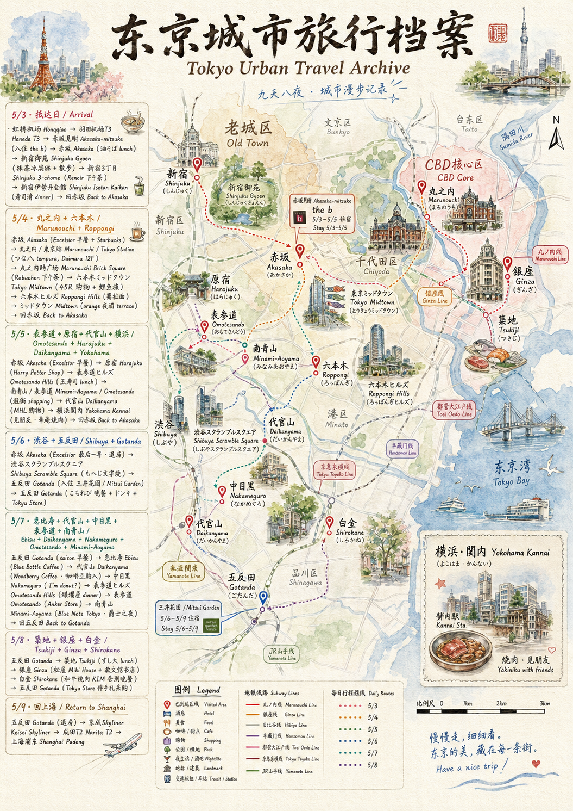

第一餐永远是缓冲Day One — Always a Buffer
虹桥早餐的牛肉面,落地后赤坂的東京油組総本店拌面,一辣一不辣。新宿御苑边的笹屋伊織,宇治抹茶软冰淇淋融在五月的风里。Renoir 的二十层千层蛋糕配两杯咖啡 — 是给疲惫的代偿。
晚饭去了築地寿司清 伊勢丹会館。おまかせ×2,刺身,炸白虾,炙沙丁鱼,梅酒。¥17,150。教训 №01这家是出名老铺的百货分店,板前虽在,但寿司是一盘一起上的,Tabelog 评分 3.16。后来才知道:同一招牌,本店和分店是两件事。
原本计划里有镰仓的大佛、江ノ島的水族馆、箱根的温泉旅馆。最后落地的版本只去了横浜 — 天气把镰仓劝退,旅伴的相聚把箱根换成了赤坂的多住一晚。剩下的时间,都给了东京的咖啡店、街角的烧鸟、深夜的拉面。
这是一次美食优先的旅行。寿司、天妇罗、文字烧、和牛、拉面、精品咖啡、爵士现场 — 每一种都找到了一家。有惊喜也有遗憾。最大的惊喜是白金的 KIM 和代官山的 Woodberry Coffee;最大的浪费是伊勢丹会館里的一家分店寿司,¥17,150 教会我们一句话:分店不等于本店。
下面是按日的复盘 — 不是流水账,是七天里那些值得记住的瞬间,以及下次该怎么做得更好。

虹桥早餐的牛肉面,落地后赤坂的東京油組総本店拌面,一辣一不辣。新宿御苑边的笹屋伊織,宇治抹茶软冰淇淋融在五月的风里。Renoir 的二十层千层蛋糕配两杯咖啡 — 是给疲惫的代偿。
晚饭去了築地寿司清 伊勢丹会館。おまかせ×2,刺身,炸白虾,炙沙丁鱼,梅酒。¥17,150。教训 №01这家是出名老铺的百货分店,板前虽在,但寿司是一盘一起上的,Tabelog 评分 3.16。后来才知道:同一招牌,本店和分店是两件事。
上午两杯咖啡 — Excelsior + Starbucks。下午つな八 大丸東京 12F的柏木套餐 + 浜風套餐 + 蔬菜天妇罗。1881 年创业的老铺,百年磨出的脆与油,不浮夸,但稳。
丸之内 La Boutique de Joël Robuchon 的蒙布朗 ¥1,400 一个,值。下午溜达去 ミッドタウン,在 45R 买了第一件免税 T 恤(908 Logo)。晚上六本木ヒルズ的篝拉面 — 鸡白汤 soba + 蛤蜊牡蛎 soba,味玉两个。深夜在 orange テラス席,松露薯条配迷迭香尼格罗尼,正好结束这一天。
原宿的 Harry Potter Shop — 格兰芬多 T 恤 + 徽章 + Harry 魔杖,¥13,340。表参道ヒルズ 的築地玉寿司表参道握り,午餐稳妥。下午代官山的 MHL:T 恤、牛仔衬衫、白皮带、白裤子 ¥88,200 — 这一笔买的是设计的克制。
晚上换城去横浜,关内的和牛焼肉 幸庵。匠切卡尔比 ×4,上、特选、横膈膜,柠檬沙瓦各一杯。¥20,720 是为了和老友的相聚。赤坂→新宿→原宿→代官山→横浜→赤坂 — 这天 Suica ¥3,296,是七天最高的一次。
原本要去镰仓,看了天气预报,改了。涉谷スクランブルスクエア 的 もへじ 文字烧 — 明太子もちもんじゃ + 龙虾ビスクもんじゃ,¥8,910。第一次吃文字烧,是被惊艳到的。
搬家从赤坂到五反田,赤坂↔渋谷跑了三个来回 — 这是这天的另一个教训:退房时先把行李送到新酒店,再去玩。晚上去了五反田的こもれび。教训 №02没查 Tabelog 就走进去,Tabelog 3.07,¥5,470。和寿司清那笔合计 ¥22,620 — 够吃一顿顶级法餐了。
五反田 → 恵比寿 → 代官山 → 中目黒 → 表参道 → Blue Note,一条直线,不走回头路。早晨 saison bakery 的牛油果吐司 + Flat White,完美的开始。
Blue Bottle 恵比寿的 NOLA Cold Foam 和 Float,然后到代官山的 Woodberry Coffee — 这家是这趟旅行最大的发现。秘鲁 COE#2 瑰夏 + 埃塞 Lalesa 拿铁,¥2,850。买了厄瓜多尔 Sidra 和埃塞 Lalesa 各 100g 的咖啡豆带回家。中目黒的 I'm donut? 17:29 去,一分钟零排队。
晚上是这趟旅行最贵也最值的一笔:Blue Note TokyoThe Hot Sardines 双人座,¥27,500 + 酒水 ¥5,390。爵士在六本木的小厅里,比预期更近也更暖。
最后一天起得晚,15:23 才吃午饭 — 築地すし大。勝どきセット + おまかせ + 追加握り,¥9,625。板前一贯一贯握给你看,补回了第一晚伊勢丹的遗憾。这才是寿司应该有的样子。
銀座的松屋,Miki House 给孩子;教文館 一本旅行书一本文学。傍晚去白金的 和牛焼肉 KIM — 16 周年限定套餐 ×2 + 加贺梅酒 + 可乐,¥27,660。这是一次告别的仪式。如果只能选一家烧肉,就是这家。Tokyu Store 五反田补的伴手礼 — ほりにし、牡蛎酱油、旨味盐、煎茶 — 比机场免税店便宜得多。
saison 五反田的浅煎り热拿铁,自由が丘 TODAY'S SPECIAL 的 Choko 杯 + KATACHI 木盘。日暮里换乘 Skyliner,在 ecute 抢了 ちよだ鮨的本まぐろ中とろ + やりいか,船橋屋的白玉あんみつ。
成田 T2 的蝋燭屋第三次 — 麻婆麺 + チーズ麻婆麺。这家全程吃了三回,是真的喜欢。最后一笔是 JAL PLAZA 82 番ゲート 的じゃがポックル和白い恋人 ¥8,037 — 后来想想,这些超市都有,而且更便宜。
寿司、天妇罗、文字烧、和牛、拉面、咖啡、爵士 —美食目标 · 完全达成
每一种都找到了一家。
这次旅行有三个瞬间会被反复想起 — 一次告别的烧肉、一晚爵士的现场、一杯瑰夏的香气。其余的美味会被时间冲淡,这三次不会。
16 周年限定套餐双人份 — 这是这趟旅行的告别仪式。从赤坂到五反田、从筑地到银座,一周的味觉记忆在这里收束。
秘鲁 COE#2 瑰夏 + 埃塞 Lalesa 拿铁,三支咖啡的品鉴。计划外的发现,带了 200g 豆子回家。
The Hot Sardines · 双人座 · DR.JAZZ 一杯。新奥尔良 swing 在六本木的小厅里 — 一晚最贵的一笔,也是最值的一笔。
十三家店,从顶级三星到一次×。值得记住的、踩雷的、想再回去的。
合计 ¥22,620 的代价,换来两条朴素的规则。下次出门前,先把它们贴在备忘录上。
老铺的百货分店≠本店。同样的招牌,在百货商场里就变成"一盘上"的批量化。订位前在 Tabelog 看一眼评分 — 3.16 是个明确的信号。
搬到新酒店后,饿着肚子没查 Tabelog 就走进去。规则简单:陌生区域,新店,5 分钟看一眼分数 — 3.3 以下不进。
¥31,825 元 · 餐饮占了将近三分之一,购物紧随其后,娱乐主要是 Blue Note 那一晚。机票 + 酒店因为提前订,整体反而最省。
从赤坂到五反田,从銀座到自由が丘 — 七天,东京的西边、南边、东边都踩到了一些。北边和东北的浅草、上野、秋叶原,这次没去,留给下次。
美食优先的目标完全达成,KIM 和 Woodberry 是最大惊喜,寿司清和こもれび是两个教训。
下次记住这四条就好。